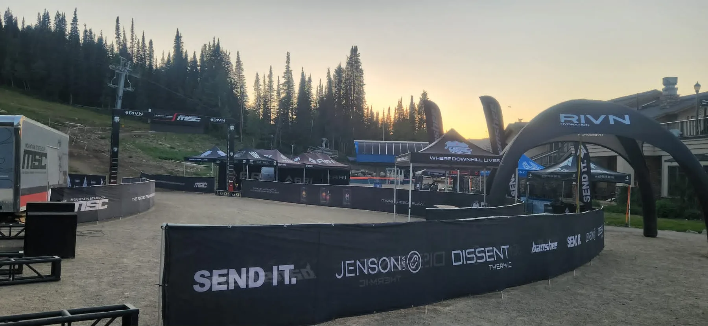

Course-Wide Coverage
Camera positions and operator assignments built around the natural flow of the event.
Outdoor broadcast production
Down The Wire Productions designs multi-camera broadcast systems for mountain sports, endurance events, outdoor races, festivals, and locations where traditional venue infrastructure does not exist.

Field-first production
Remote event broadcasting requires more than cameras. We plan signal transport, communications, power, crew access, replay, graphics, commentary, venue presentation, and streaming as one system.
Camera positions and operator assignments built around the natural flow of the event.
Fiber, networking, transport, power, and communications engineered for difficult locations.
Live streams, venue screens, commentary, sponsor integrations, and reusable post-event content.
Related services
Explore our sports broadcast production, replay, graphics, and infrastructure, and event crew services.
Talk through your venue